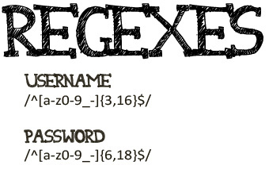
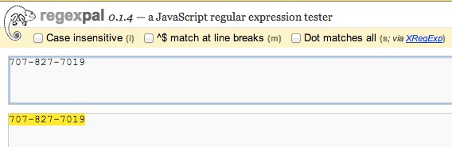

Regular Expressions

Regular expressions began to emerge when mathematician Stephen Kleene wrote his book “Introduction to Metamathematics” which was published back in 1952. Regular expressions were actually created before that, but that book help to become popular. What is a regular expression though? A regular expression is a sequence of characters that forms a search pattern. So if you wanted to find if a certain word or phrase is used in some text, you can write a regular expression and it will tell you if that pattern exists in the text. Some programming languages actually have their own version of regular expressions(Perl, Java, JavaScript, C#, Ruby), which sometimes are very different from Unix command-line tools like vim and grep.
Some ways that you would use regular expressions, which is also very commonly known as regex, are just by searching with a literal character. You can also use a character set to match only one out of several characters. No matter what you are trying to find regex has some pattern to help you find anything from digits, to non-printable characters(Unicode), to repetition.
Regex can also be extremely simplistic such as \d or something as complicated as ^(\(\d{3}\)|^\d{3}[.-]?)?\d{3}[.-]?\d{4}$. Looks complicated, all that does is mach a phone number, with or without parentheses around the area code, or with or without hyphens or periods to separate the numbers.
Here are a couple examples of regex.
This first one shows all the matches to the number 7 in the test number.
This shows the complete match of the phone number.
This shows the all the matching numbers from 0 to 9.